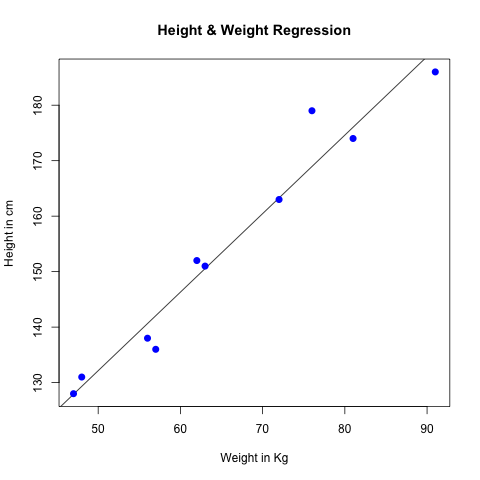

R - 線形回帰
統計学において、線形回帰（Linear Regression）は、線形回帰方程式と呼ばれる最小二乗関数を用いて、1つまたは複数の説明変数と従属変数の間の関係をモデル化する回帰分析の一種です。
簡単に言うと、2つ以上の変数間の相互依存の定量的関係を決定するための統計分析方法です。
回帰分析において、1つの説明変数と1つの従属変数のみを含み、両者の関係が1本の直線で近似できる場合、この回帰分析を一元線形回帰分析と呼びます。回帰分析が2つ以上の説明変数を含み、従属変数と説明変数の間が線形関係である場合、多元線形回帰分析と呼びます。
一元線形回帰分析法の数学方程式：
y = ax + b
yは従属変数の値です。
xは説明変数の値です。
aとbは一元線形回帰方程式のパラメータです。
次に、人体の身長と体重の予測モデルを作成できます：
- 1. サンプルデータを収集します：身長と体重。
- 2. lm() 関数を使用して関係モデルを作成します。
- 3. 作成したモデルから係数を見つけ、数学方程式を作成します。
- 4. 関係モデルの概要を取得し、平均誤差、すなわち残差（推定値と実測値の差）を理解します。
- 5. predict() 関数を使用して人の体重を予測します。
データの準備
以下は人の身長と体重のデータです：
# 身高，单位 cm 151, 174, 138, 186, 128, 136, 179, 163, 152, 131 # 体重，单位 kg 63, 81, 56, 91, 47, 57, 76, 72, 62, 48
lm() 関数
Rでは、lm() 関数を使用して線形回帰を行うことができます。
lm() 関数は、説明変数と従属変数の間の関係モデルを作成するために使用されます。
lm() 関数の構文は次のとおりです：
lm(formula,data)
パラメータの説明：
- formula - x と y の関係を表すシンボリックな数式。
- data - 適用するデータ。
関係モデルを作成し、係数を取得します：
例
# サンプルデータ
x <- c(151, 174, 138, 186, 128, 136, 179, 163, 152, 131)
y <- c(63, 81, 56, 91, 47, 57, 76, 72, 62, 48)
# lm() 関数に渡す
relation <- lm(y~x)
print(relation)
x <- c(151, 174, 138, 186, 128, 136, 179, 163, 152, 131)
y <- c(63, 81, 56, 91, 47, 57, 76, 72, 62, 48)
# lm() 関数に渡す
relation <- lm(y~x)
print(relation)
上記のコードを実行すると、出力結果は次のようになります：
Call:
lm(formula = y ~ x)
Coefficients:
(Intercept) x
-38.4551 0.6746
使用summary()関数は関係モデルの概要を取得します：
例
x <- c(151, 174, 138, 186, 128, 136, 179, 163, 152, 131)
y <- c(63, 81, 56, 91, 47, 57, 76, 72, 62, 48)
# lm() 関数に渡す
relation <- lm(y~x)
print(summary(relation))
y <- c(63, 81, 56, 91, 47, 57, 76, 72, 62, 48)
# lm() 関数に渡す
relation <- lm(y~x)
print(summary(relation))
上記のコードを実行すると、出力結果は次のようになります：
Call:
lm(formula = y ~ x)
Residuals:
Min 1Q Median 3Q Max
-6.3002 -1.6629 0.0412 1.8944 3.9775
Coefficients:
Estimate Std. Error t value Pr(>|t|)
(Intercept) -38.45509 8.04901 -4.778 0.00139 **
x 0.67461 0.05191 12.997 1.16e-06 ***
---
Signif. codes: 0 ‘***’ 0.001 ‘**’ 0.01 ‘*’ 0.05 ‘.’ 0.1 ‘ ’ 1
Residual standard error: 3.253 on 8 degrees of freedom
Multiple R-squared: 0.9548, Adjusted R-squared: 0.9491
F-statistic: 168.9 on 1 and 8 DF, p-value: 1.164e-06
predict() 関数
predict() 関数は、作成したモデルに基づいて数値を予測するために使用されます。
predict() 関数の構文は次のとおりです：
predict(object, newdata)
パラメータの説明：
- object - lm() 関数で作成された数式。
- newdata - 予測したい値。
以下の例では、新しい体重値を予測します：
例
# サンプルデータ
x <- c(151, 174, 138, 186, 128, 136, 179, 163, 152, 131)
y <- c(63, 81, 56, 91, 47, 57, 76, 72, 62, 48)
# lm() 関数に渡す
relation <- lm(y~x)
# 身長170cmの体重を予測する
a <- data.frame(x = 170)
result <- predict(relation,a)
print(result)
x <- c(151, 174, 138, 186, 128, 136, 179, 163, 152, 131)
y <- c(63, 81, 56, 91, 47, 57, 76, 72, 62, 48)
# lm() 関数に渡す
relation <- lm(y~x)
# 身長170cmの体重を予測する
a <- data.frame(x = 170)
result <- predict(relation,a)
print(result)
上記のコードを実行すると、出力結果は次のようになります：
1 76.22869
グラフを生成することもできます：
例
# サンプルデータ
x <- c(151, 174, 138, 186, 128, 136, 179, 163, 152, 131)
y <- c(63, 81, 56, 91, 47, 57, 76, 72, 62, 48)
relation <- lm(y~x)
# png画像を生成
png(file = "linearregression.png")
# グラフを生成
plot(y,x,col = "blue",main = "Height & Weight Regression",
abline(lm(x~y)),cex = 1.3,pch = 16,xlab = "Weight in Kg",ylab = "Height in cm")
x <- c(151, 174, 138, 186, 128, 136, 179, 163, 152, 131)
y <- c(63, 81, 56, 91, 47, 57, 76, 72, 62, 48)
relation <- lm(y~x)
# png画像を生成
png(file = "linearregression.png")
# グラフを生成
plot(y,x,col = "blue",main = "Height & Weight Regression",
abline(lm(x~y)),cex = 1.3,pch = 16,xlab = "Weight in Kg",ylab = "Height in cm")
グラフは次のとおりです：

その他の拡張